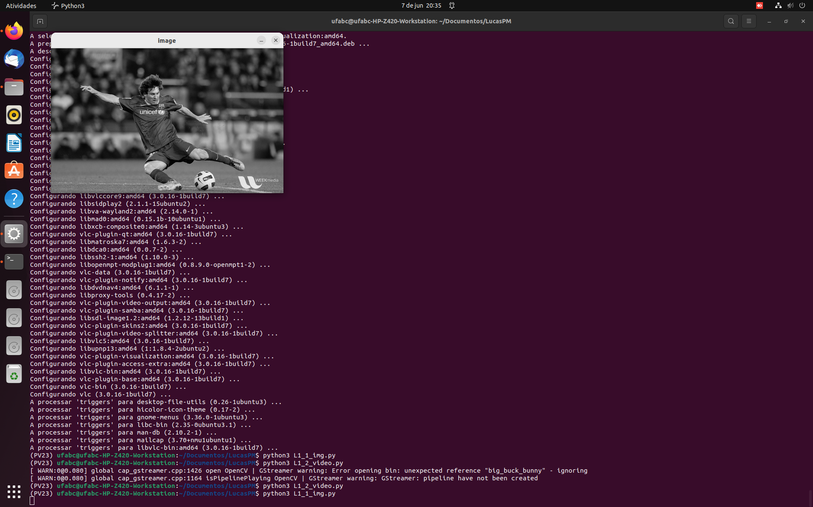
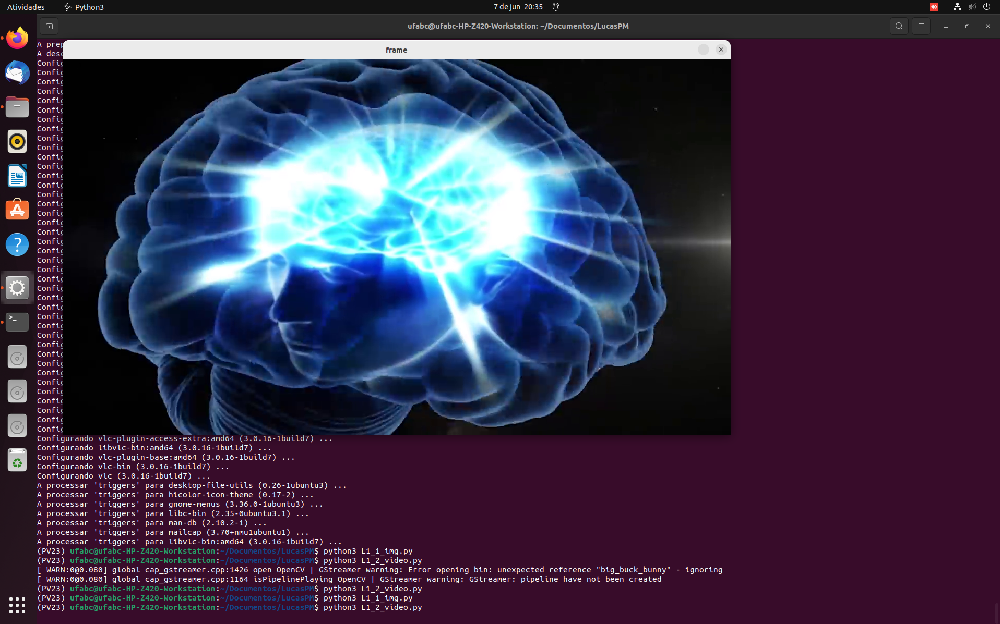
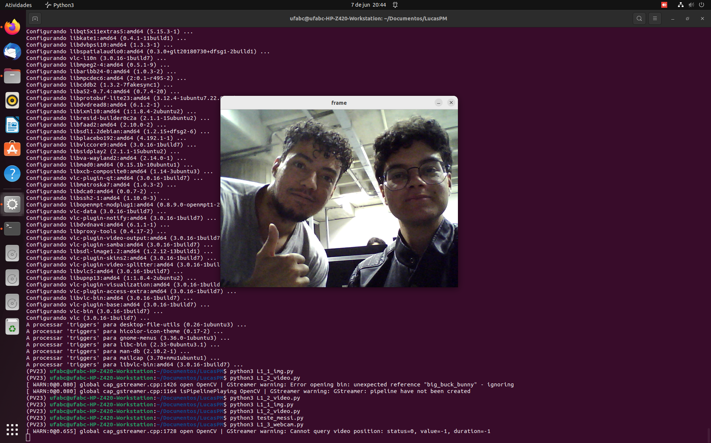

Introdução
Ao utilizar o OpenCV com a linguagem Python, é possível rodar um script para receber uma entrada e transformá-la em um arquivo de imagem (no caso do relatório, foram utilizadas uma webcam e outras imagens.)
Objetivos
- Iniciar os trabalhos no Ubuntu com o OpenCV
- Conhecer os comandos para visualizar e gravar imagens e videos
- Gravar um Vídeo e mostrá-lo no relatório
Fundamentos básicos
Ubuntu: é um sistema operacional ou sistema operativo de código aberto, construído a partir do núcleo Linux.
OpenCV: é uma biblioteca multiplataforma, totalmente livre ao uso acadêmico e comercial, para o desenvolvimento de aplicativos na área de Visão computacional.
Miniconda: Conda é um gerenciador de pacotes de código aberto multiplataforma , independente de linguagem e sistema de gerenciamento de ambiente. Ele foi originalmente desenvolvido para solucionar os difíceis desafios de gerenciamento de pacotes enfrentados pelos cientistas de dados Python e hoje é um gerenciador de pacotes popular para Python e R .
Materiais e métodos
- Webcam
- Ubuntu
- Miniconda
- Python
- OpenCV
Parte 1
Foi realizada a instalação do OpenCV (disponível em https://linuxize.com/post/how-to-install-opencv-on-ubuntu-20-04/) e do Miniconda3 (disponível em https://docs.conda.io/en/latest/miniconda.html#linux-installers) no ambiente Ubuntu e foi realizada a execução teste dos arquivos disponibilizados pelo professor através do terminal Ubuntu utilizando o comando "python 3 nomeDoArquivo.py".
Parte 2
A) Por que a janela aberta não mostra a imagem colorida?
Resposta: porque o algoritmo converte a imagem original em um png em escala gray e mostra ela em seguida, podendo ser salva pressionando a tecla S.

B) modifique o programa para que as imagens sejam exibidas mais rápidamente e depois para que sejam exibidas mais lentamente. Responda qual a explicação de alteração de velocidade de exibição, e apresente suas soluções detalhadamente.
Resposta: para alterar a velocidade, basta aumentar o valor do divisor na linha 15, fazendo com que o programa espere menos tempo para passar para o próximo frame. Para diminuir a velocidade, basta diminuir o valor do divisor. A função time.sleep faz com que o programa aguarde uma determinada quantidade de tempo antes de passar para a próxima linha, que no caso é a linha 12, que captura os frames do vídeo.

C) modifique o programa para que uma imagem da câmera seja salva num arquivo “foto1.png” no momento em que for clicada a tecla ‘x’ no teclado. Apresente o resultado e sua solução detalhadamente.
Resposta: para que o arquivo gerado fosse salvo, foi utilizado parte do programa de L1_1_img.py, mais especificamente os comandos waitKey para que o programa registrasse a tecla apertada (X (ignorar comentários no programa)) e o comando imwrite, que salva o frame no arquivo foto1.png.

D) modifique o programa para que as imagens gravadas estejam “normais” no arquivo de video salvo, e apresentem uma velocidade de exibição adequada. Apresente o resultado e sua solução detalhadamente.
Resposta: para inverter a imagem gerada, bastou alterar o valor de 0 para 1 da linha "frame = cv.flip(frame,1)". Para alterar a velocidade de gravação, basta alterar o valor fps da linha "fps = 40", quanto maior o valor, maior a velocidade de gravação.

Parte 3
A) A foto de todos os integrantes do grupo foi obtida através do programa C da parte 2 em python que foi disponibilizado e modificado para que fosse possível gravar a imagem da webcam.
B) A montagem da foto dos integrantes com os avatares foi realizada utilizando o editor de fotos Paint3d, onde foram utilizadas as funções de seleção mágica e recortar/colar.
C) Para realizar a gravação dos vídeos dos integrantes e dos objetos, foi utilizado o programa modificado do item D da parte 2, onde foram alteradas as propriedades de FPS para acelerar ou desacelerar o vídeo.
Resultados e análise
PARTE 1
Ao executar o comando, a imagem original apareceu sem alterações.

PARTE 2
A) A imagem ficou em preto e branco devido aos parâmetros passados na função imread.
B) A função time.sleep retarda a velocidade de troca de frame.
C) Embora a foto tenha sido salva com sucesso, foi necessário segurar a tecla X ao invés de apenas pressionar, não se sabe se foi bug ou variações do teclado.
D) O vídeo foi salvo normalmente. A função video.writer recebe como parâmetros (const String &filename, int fourcc, double fps, Size frameSize, bool isColor=true), tornando o processo de modificação mais fácil.
PARTE 3
A) Foto com todos os integrantes do grupo, tirada usando OpenCV. Os integrantes utilizaram os mesmos tons de roupa mas isso não influenciou o resultado final. A qualidade da webcam era baixa e a imagem apresentou granulações, o que é bom para a vizualização dos efeitos dos filtros no próximo relatório.

B) Montagem dos integrantes com os avatares. Os avatares apresentam resoluções diferentes, o que também será útil para visualizar o efeito dos filtros.

C) Filmem e editem DOIS vídeos com pessoas e DOIS videos com um objeto. A edição foi realizada utilizando o arquivo do item D da parte 2. Inicialmente o vídeo apresenta uma coloração esverdeada mas logo volta ao normal.
Conclusões e Comentários finais
Nesse experimento foram arbodados conceitos básicos para o entendimento do funcionamento do OpenCV e do ambiente Ubuntu, sendo mais uma preparação e introdução aos próximos laboratórios. Foram usados comandos como ferramentas de personalização de mídia presentes em aplicativos usuais de edição e isso abre brecha para mais possibilidades de edição e de entendimento sobre como esses aplicativos funcionam.